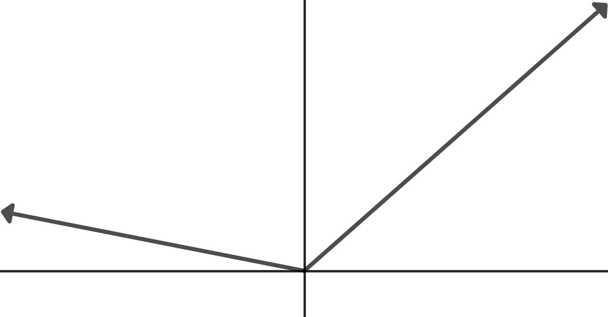
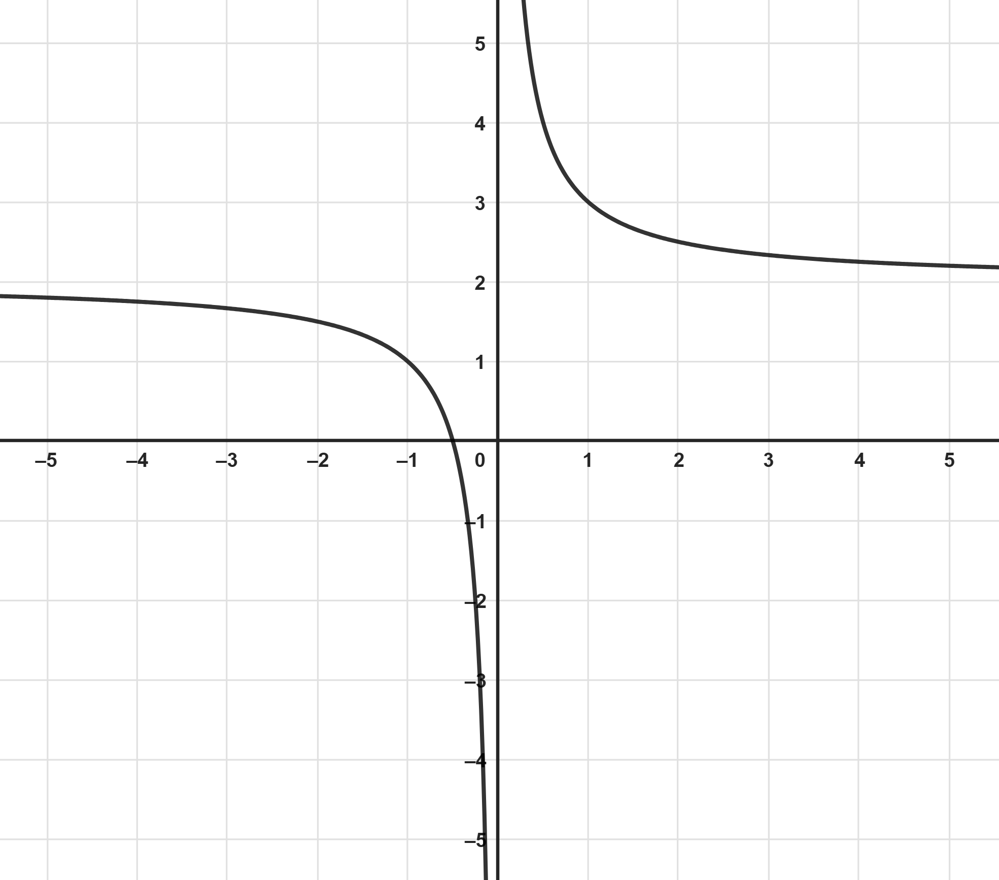

Skip to main content
Contents Dark Mode Prev Up Next \(\newcommand{\N}{\mathbb N} \newcommand{\Z}{\mathbb Z} \newcommand{\Q}{\mathbb Q} \newcommand{\R}{\mathbb R}
\newcommand{\lt}{<}
\newcommand{\gt}{>}
\newcommand{\amp}{&}
\definecolor{fillinmathshade}{gray}{0.9}
\newcommand{\fillinmath}[1]{\mathchoice{\colorbox{fillinmathshade}{$\displaystyle \phantom{\,#1\,}$}}{\colorbox{fillinmathshade}{$\textstyle \phantom{\,#1\,}$}}{\colorbox{fillinmathshade}{$\scriptstyle \phantom{\,#1\,}$}}{\colorbox{fillinmathshade}{$\scriptscriptstyle\phantom{\,#1\,}$}}}
\)
Section A.7 Chapter 7 Lecture Notes
Worksheet A.7.1 Inverse Functions
Definition A.7.1 . Arithmetic Operations on Functions.
Let \(f\) and \(g\) be functions.
The sum of \(f\) and \(g\text{,}\) denoted \(f+g\text{,}\) is given by
\begin{equation*}
(f+g)(x)=f(x)+g(x)
\end{equation*}
The difference of \(f\) and \(g\text{,}\) denoted \(f-g\text{,}\) is given by
\begin{equation*}
(f-g)(x)=f(x)-g(x)
\end{equation*}
The product of \(f\) and \(g\text{,}\) denoted \(fg\text{,}\) is given by
\begin{equation*}
(fg)(x)=f(x)\cdot g(x)
\end{equation*}
The quotient of \(f\) and \(g\text{,}\) denoted \(\frac{f}{g}\text{,}\) is given by
\begin{equation*}
\left(\frac{f}{g}\right)(x)=\frac{f(x)}{g(x)}
\end{equation*}
1. Performing Arithmetic Operations on Functions.
For the functions
\(f(x)=5-x\) and
\(g(x)=x^2-3x\text{,}\) find the following functions.
\(\displaystyle (f+g)(x)\)
\(\displaystyle (f-g)(x)\)
\(\displaystyle (fg)(x)\)
\(\displaystyle \left(\frac{f}{g}\right)(x)\)
Theorem A.7.2 . The Domains of Sums, Differences, and Products of Functions.
The domain of
\(f+g\text{,}\) \(f-g\text{,}\) and
\(fg\) consists of all elements common to the domains of
\(f\) and
\(g\text{.}\)
The domain of
\(\frac{f}{g}\) consists of all elements common to the domains of
\(f\) and
\(g\text{,}\) excluding any
\(x\) for which
\(g(x)=0\text{.}\)
2. Finding Domains of Functions.
For the functions
\(f(x)=\frac{1}{x}\) and
\(g(x)=\sqrt{2-x}\text{,}\) find the following functions and their domains.
\(\displaystyle (f+g)(x)\)
\(\displaystyle (f-g)(x)\)
\(\displaystyle (fg)(x)\)
\(\displaystyle \left(\frac{f}{g}\right)(x)\)
Definition A.7.3 . Composition of Functions.
Let
\(f\) and
\(g\) be functions.
The composition of \(f\) and \(g\text{,}\) denoted \(f\circ g\text{,}\) is given by
\begin{equation*}
(f\circ g)(x)=f\big(g(x)\big)
\end{equation*}
There are two additional definitions that are associated with composition.
\(g(x)\) is called the
inner function since it appears inside the input of
\(f(x)\text{.}\)
\(f(x)\) is called the
outer function since it appears outside the input of
\(g(x)\text{.}\)
3. Finding the Composition of Two Functions.
For the functions
\(f(x)=\sqrt{x-2}\) and
\(g(x)=\frac{1}{x}\text{,}\) determine the expression that defines the following functions.
\(\displaystyle (f\circ g)(x)\)
\(\displaystyle (g\circ f)(x)\)
4. Decomposing a Function into a Composition.
Let
\(h(x)=(x-2)^2\text{.}\) Find two non-trivial functions
\(f(x)\) and
\(g(x)\) such that
\(h(x)=(f\circ g)(x)\text{.}\)
5. Decomposing a Function into a Composition.
Let
\(h(x)=\sqrt{3-x^2}\text{.}\) Find two non-trivial functions
\(f(x)\) and
\(g(x)\) such that
\(h(x)=(f\circ g)(x)\text{.}\)
6. Evaluating Compositions of Functions.
Let
\(f(x)=x^2-1\) and
\(g(x)=3x-5\text{.}\) Evaluate the following.
\(\displaystyle (f\circ g)(3)\)
\(\displaystyle (g\circ f)(3)\)
Definition A.7.4 . Definition.
A function
\(f(x)\) is
one-to-one whenever
\(x_1\ne x_2\) implies
\(f(x_1)\ne f(x_2)\text{.}\)
(a) The graph is one to one since the \(y\) -coordinate of every point on the graph is unique.(b) The graph is not one to one since three different \(x\) -coordinates all have the same \(y\) -coordinate. Figure A.7.5. Examples of One-to-One and Not One-to-One Functions
Theorem A.7.7 . The Horizontal Line Test.
A function is one-to-one if and only if no horizontal line intersects its graph more than once.
7. Horizontal Line Test.
Determine if the graph is of a one-to-one function.

Figure A.7.8. The graph of a function that is in the shape of a checkmark.
8. Horizontal Line Test.
Determine if the graph is of a one-to-one function.

Figure A.7.9. Graph for Example 2.
Definition A.7.10 . Definition.
Let
\(f(x)\) be any function and let
\((x,f(x))\) be any point on its graph. Then the
inverse of
\(f(x)\) is the set of all points of the form
\((f(x),x)\text{.}\)
9. Inverse of a function.
Show that the inverse of
\(f(x)=x^2\) is not a function.
Theorem A.7.12 . Theorem.
Any function that passes the horizontal line test has an inverse that is also a function.
10. Inverse of a Function.
Show that
\(f(x)=x^2,\; x\ge 0\) has an inverse function. Graph the inverse function, and identify the inverse function from its graph.
Theorem A.7.15 . Inverse Function Property.
Let
\(f(x)\) be any one-to-one function. Then the inverse function
\(f^{-1}(x)\) exists and has the following properties.
\((f^{-1}\circ f)(x)=x\) for any
\(x\) in the domain of
\(f\text{.}\)
\((f\circ f^{-1})(x)=x\) for any
\(x\) in the range of
\(f\text{.}\)
The domain of
\(f^{-1}\) equals the range of
\(f\text{.}\)
The range of
\(f^{-1}\) equals the domain of
\(f\text{.}\)
11. Determine if two functions are inverses of each other.
Determine if
\(f(x)=x^2\) and
\(g(x)=\sqrt{x}\) are inverse functions.
12. Determine if two functions are inverses of each other.
Determine if
\(f(x)=3x-2\) and
\(g(x)=\frac{x+2}{3}\) are inverse functions.
Procedure A.7.16 . Finding the Inverse of a Function Algebraically.
Replace
\(f(x)\) with
\(y\text{.}\)
Interchange
\(x\) and
\(y\text{.}\)
Replace
\(y\) with
\(f^{-1}(x)\text{.}\)
13. Find the inverse of a linear function.
Find the inverse for
\(f(x)=5x+3\text{.}\)
14. Find the inverse of a rational function.
Find the inverse for
\(f(x)=\frac{3-x}{x+9}\text{.}\)
Theorem A.7.17 . Graphs of Inverse Functions.
If the point
\((a,b)\) is on the graph of
\(y=f(x)\text{,}\) then the point
\((b,a)\) is on the graph of
\(y=f^{-1}(x)\text{.}\)
15. Example 14.
The graph of a one-to-one function
\(f(x)\) with some sample points is given. Sketch the graph of
\(f^{-1}(x)\text{.}\)
Figure A.7.18. Graph of \(f(x)\) for Example 14.
Procedure A.7.19 . Creating Inverses by restricting a function.
Let
\(f(x)\) be a function that is not one-to-one. If we restrict the domain of
\(f(x)\) so that it is one-to-one on that domain, then the inverse of the restricted function will be a function.
16. Example 15.
The function
\(f(x)=\frac{1}{(x+2)^2}\) is not one-to-one since its graph does not pass the horizontal line test. Find a restriction of the domain that will make
\(f(x)\) one-to-one. Then find the inverse of the restricted function.